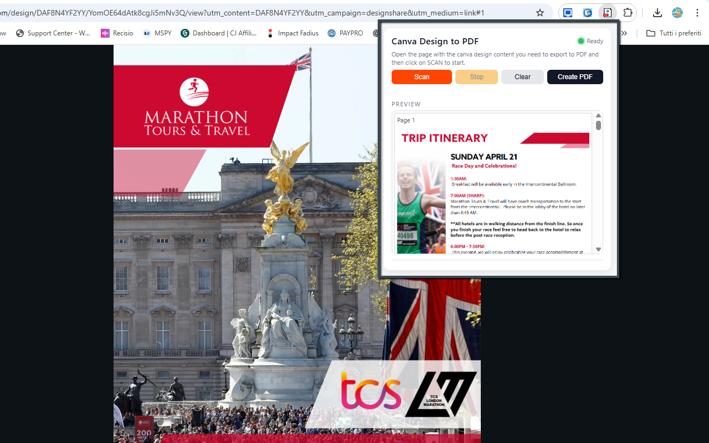

Canva Design to PDF Saver
Canva Design to PDF Saver lets you transform any Canva flipbook or multi-page design into a high-quality, downloadable PDF in just a few clicks. The extension automatically captures each page of your project, cleans it from borders and side spaces, and builds a professional, ready-to-share PDF — directly from your browser.
It’s the perfect companion for designers, teachers, marketers, students, or anyone who needs a fast and reliable way to export Canva pages as individual images or full-resolution PDF documents. No more manual screenshots, cropping, or stitching: the extension navigates your flipbook page by page, captures each screen, and assembles the pages into a clean, consistent PDF.
Canva Design to PDF Saver focuses on the actual design content: editor UI, side panels, black bars and empty margins are removed automatically. Every captured page is cropped to the visible design area for a uniform, edge-to-edge look that’s ideal for printing, sharing with clients, uploading to platforms, or distributing as digital handouts.
The extension also provides an instant preview gallery inside the popup. As pages are captured, you can visually check that everything looks correct before generating the final PDF. In PRO mode, you can remove the default DEMO watermark and export unlimited clean PDFs for professional use.
Install Canva Design to PDF Saver from the Chrome Web Store✨ Main Features
✔ Automatic Page Capture
The extension detects the active Canva flipbook or document and captures each page one by one — no manual scrolling or screenshotting required. It simulates navigation inside the Canva viewer so every page is captured in the correct order.
✔ Smart Cropping (No Black Bars)
Only the actual page content is captured. Side margins, Canva editor UI, toolbars and black borders are removed automatically. This ensures clean and consistent results from the first to the last page.
✔ Multi-Page PDF Generation
Once all pages are captured, they are assembled into a properly formatted multi-page PDF, ready for printing, sharing or uploading. Each page becomes its own PDF page, preserving the layout and visual design from Canva.
✔ Fast Navigation Automation
The extension simulates the “Next Page” action inside Canva, ensuring a smooth page-by-page export even for long flipbooks or presentations. You don’t have to click through pages yourself: just start the scan and let the extension do the work.
✔ Instant Preview
Each captured page appears inside the extension popup as a thumbnail. You can verify alignment, cropping and quality before generating the final PDF, and restart the scan if needed.
✔ Watermark-Free PRO Mode
In the Free mode, a small DEMO watermark may be applied to the exported PDF. By entering your unlock code, you activate PRO mode and can export unlimited, watermark-free PDFs, perfect for professional delivery, client work, and commercial use.
🎯 Ideal For
- Teachers preparing handouts, worksheets and classroom materials from Canva.
- Designers saving mockups, portfolios and client concepts as PDFs.
- Marketers exporting flipbooks, presentations and pitch decks.
- Students exporting study notes, projects and visual summaries.
- Anyone using Canva daily who needs a fast, consistent way to generate high-quality PDFs.
🛠 How It Works
- Install Canva Design to PDF Saver from the Chrome Web Store.
- Open your flipbook or multi-page project in Canva (presentation, document, slideshow, etc.).
- Make sure the viewer is showing the first page you want to export.
- Click the extension icon in the toolbar to open the popup.
- Click Scan Pages: the extension automatically navigates through your design and captures each page.
- Watch the preview gallery in the popup fill with thumbnails for each captured page.
- If everything looks correct, click Create PDF to generate the final multi-page PDF.
- Choose a location via your browser’s download dialog and save the file.
- Open or share the resulting PDF using any PDF viewer, platform or print service.
No manual screenshots, no external tools, no extra steps: just click, scan, export.
📷 Screenshots


🔒 Privacy & Permissions
Canva Design to PDF Saver runs entirely inside your browser. It captures only what is visible in your Canva tab and does not upload designs or screenshots to external servers. Your projects stay on your device.
To work correctly, the extension typically requires a small set of permissions:
- activeTab / host permissions: to detect and capture content from the current Canva tab.
- scripting / tabs (depending on manifest): to automate page navigation and trigger captures.
- downloads: to save the generated PDF file to your computer.
- storage: to remember your settings, preview cache and PRO unlock status.
The extension does not bypass Canva’s access restrictions or licensing rules. It can only capture content that you can already see in your browser. Its purpose is to help you export your own designs in a more convenient way.
View Canva Design to PDF Saver on Chrome Web Store